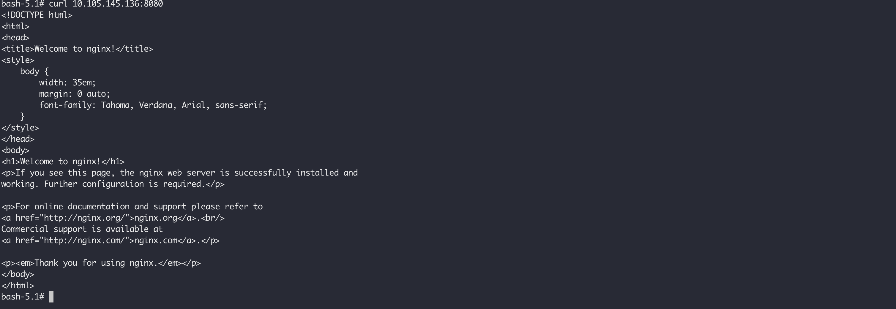
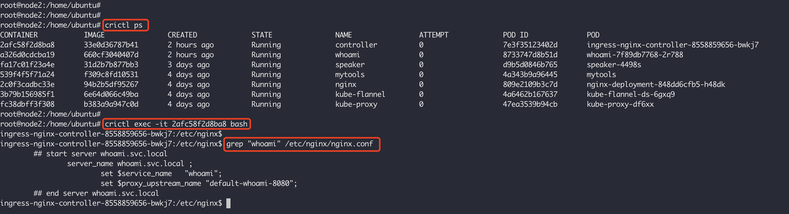

Service是Kubernetes中的资源类型，用来将一组Pod的应用作为网络服务公开。虽然每个Pod都有自己的IP，但是这个IP的生命周期与Pod生命周期一致，也就是说Pod销毁后这个IP也就无效了，而Service的IP（ClusterIP） 则是在创建之后便不会改变，Service 与 Pod 之前通过iptables和ipvs代理等手段关联。k8s一共提供了四种不同目的类型的Service，分别是ClusterIP、NodePort、LoadBalancer以及ExternalName，本来我们就来探索这四种服务的使用场景以及背后的使用原理。
k8s 集群中的每个节点都是运行一个kube-proxy ，它用于实现流量从Service到Pod之间的转发。默认在 Linux 平台下，它使用 iptables 作为后端实现，通过监听Kubernetes控制平面，获知对 Service和EndpointSlice对象的添加和删除操作，对于每个Service，kube-proxy 会添加 iptables 规则，在这些这些规则的加持下，流向Service的流量会被重新路由到Service后端集合中的其中之一。
四种模式的基本工作原理如下图所示：
为了验证这里面是如何工作的，我们先创建Pod，Service，然后一步步分析k8s和操作系统互相配合，是如何将数据包转发到对应Pod里面的服务中去。第一步，我这里有三个可用节点，所以创建一个具有3个Pod的nginx-deployment：
kubectl apply -f https://k8s.io/examples/application/deployment-update.yamlkubectl scale --current-replicas=2 --replicas=3 deployment/nginx-deployment
然后我们使用下面的命令创建两个不同类型的Service：ClusterIP和NodePort，NodePort和ClusterIP不同的是，我们可以从集群外访问我们的服务：
kubectl expose deploy nginx-deployment --port=8080 --target-port=80 --type=ClusterIP --name=nginx-deploy-clusterip-svckubectl expose deploy nginx-deployment --port=8081 --target-port=80 --type=NodePort --name=nginx-deploy-nodeport-svc
在创建Service的时候，如果带了选择符，还会创建一个EndpointSlice集合，这个集合指向的是选择符选中的Pod集合，例如：：
1 2 3 4 5 6 root@ctrlnode:/home/ubuntu# kubectl get ep NAME ENDPOINTS AGE kubernetes 192.168.67.8:6443 25m nginx-deploy-clusterip-svc 10.244.0.4:80,10.244.1.2:80,10.244.2.2:80 103s nginx-deploy-nodeport-svc 10.244.0.4:80,10.244.1.2:80,10.244.2.2:80 7m24s root@ctrlnode:/home/ubuntu#
然后使用如下的命令创建一个Pod并且进入容器内进行验证：
kubectl run mytools -it --rm --image=praqma/network-multitool --image-pull-policy=IfNotPresent --command -- /bin/bash
在这个Pod中，可以使用curl 命令访问我们的服务，分别是 10.105.145.136:8080 和 10.102.231.147:8081。
k8s集群创建的时候会创建一个kube-dns服务，用于对Service进行域名解析，每个Service都会被被自动分配一个 <svc>.<namespace>.svc.<cluster-domain> 格式的域名，在每个Pod中，也会存在关于域名解析的配置：
这个文件中配置了多个search域，所以当我们写nginx-deploy-clusterip-svc、或者nginx-deploy-clusterip-svc.default，或者nginx-deploy-clusterip-svc.default.svc都是可以解析的：
ndots:5 指的是如果域名中的.大于等于5个，则不走search域，目的是减少常规域名的解析次数。
ClusterIP是K8S中最基础的服务，只能用于集群内访问。我们来看当我们从mytools这个Pod访问我们的nginx-deploy-clusterip-svc时，它是怎么样一个过程：

mytools被调度了node2上：
1 2 3 4 5 6 7 root@ctrlnode:/home/ubuntu# kubectl get pods -owide NAME READY STATUS RESTARTS AGE IP NODE NOMINATED NODE READINESS GATES mytools 1/1 Running 0 4m15s 10.244.2.3 node2 <none> <none> nginx-deployment-848dd6cfb5-c9cm6 1/1 Running 0 17m 10.244.1.2 node1 <none> <none> nginx-deployment-848dd6cfb5-h48dk 1/1 Running 0 17m 10.244.2.2 node2 <none> <none> nginx-deployment-848dd6cfb5-zbvj5 1/1 Running 0 17m 10.244.0.4 ctrlnode <none> <none> root@ctrlnode:/home/ubuntu#
从容器中发出去的报文出现在主机上时，一看系统的路由，也不知道如何处理，没有处理 10.109.146.68 的路由信息：
1 2 3 4 5 6 7 8 9 10 root@node2:/home/ubuntu# route -n Kernel IP routing table Destination Gateway Genmask Flags Metric Ref Use Iface 0.0.0.0 192.168.67.1 0.0.0.0 UG 100 0 0 enp0s1 10.244.0.0 10.244.0.0 255.255.255.0 UG 0 0 0 flannel.1 10.244.1.0 10.244.1.0 255.255.255.0 UG 0 0 0 flannel.1 10.244.2.0 0.0.0.0 255.255.255.0 U 0 0 0 cni0 172.17.0.0 0.0.0.0 255.255.0.0 U 0 0 0 docker0 192.168.67.0 0.0.0.0 255.255.255.0 U 100 0 0 enp0s1 192.168.67.1 0.0.0.0 255.255.255.255 UH 100 0 0 enp0s1
所以就会流入默认网口enp0s1进行处理，按照我们对iptables的处理流程，这个包在处理之前会先触发NF_INET_PRE_ROUTING中的一系列钩子函数，对应于 iptables 中的 PREROUTING 链，而对于路由相关的信息都是在nat表中处理的，所以我们先来看下nat表中PREROUTING链的规则：
1 2 3 4 5 6 root@node2:/home/ubuntu# iptables -t nat -L PREROUTING | column -t Chain PREROUTING (policy ACCEPT) target prot opt source destination KUBE-SERVICES all -- anywhere anywhere /* kubernetes service portals */ DOCKER all -- anywhere anywhere ADDRTYPE match dst-type LOCAL root@node2:/home/ubuntu#
在PREROUTING找了K8S自定义的链KUBE-SERVICES，这个链中存储的是关于Service的一些规则：
1 2 3 4 5 6 7 8 9 10 11 root@node2:/home/ubuntu# iptables -t nat -L KUBE-SERVICES | column -t Chain KUBE-SERVICES (2 references) target prot opt source destination KUBE-SVC-NPX46M4PTMTKRN6Y tcp -- anywhere 10.96.0.1 /* default/kubernetes:https cluster IP */ tcp dpt:https KUBE-SVC-TCOU7JCQXEZGVUNU udp -- anywhere 10.96.0.10 /* kube-system/kube-dns:dns cluster IP */ udp dpt:domain KUBE-SVC-ERIFXISQEP7F7OF4 tcp -- anywhere 10.96.0.10 /* kube-system/kube-dns:dns-tcp cluster IP */ tcp dpt:domain KUBE-SVC-JD5MR3NA4I4DYORP tcp -- anywhere 10.96.0.10 /* kube-system/kube-dns:metrics cluster IP */ tcp dpt:9153 KUBE-SVC-5KZKXYM2F4JEGSLN tcp -- anywhere 10.102.231.147 /* default/nginx-deploy-nodeport-svc cluster IP */ tcp dpt:tproxy KUBE-SVC-ATSXPZA6MCLBTOSW tcp -- anywhere 10.105.145.136 /* default/nginx-deploy-clusterip-svc cluster IP */ tcp dpt:http-alt KUBE-NODEPORTS all -- anywhere anywhere /* kubernetes service nodeports; NOTE: this must be the last rule in this chain */ ADDRTYPE match dst-type LOCAL root@node2:/home/ubuntu#
然后对于目标地址为10.105.145.136的报文进入KUBE-SVC-ATSXPZA6MCLBTOSW处理，由于nginx-deploy-clusterip-svc有三个pod，所以做负载均衡，三个POD被访问的几率都是1/3：
1 2 3 4 5 6 7 root@node2:/home/ubuntu# iptables -t nat -L KUBE-SVC-ATSXPZA6MCLBTOSW | column -t Chain KUBE-SVC-ATSXPZA6MCLBTOSW (1 references) target prot opt source destination KUBE-MARK-MASQ tcp -- !10.244.0.0/16 10.105.145.136 /* default/nginx-deploy-clusterip-svc cluster IP */ tcp dpt:http-alt KUBE-SEP-E4NSA7Z3P6FEYR22 all -- anywhere anywhere /* default/nginx-deploy-clusterip-svc -> 10.244.0.4:80 */ statistic mode random probability 0.33333333349 KUBE-SEP-ENS4OGYPXWST7P2F all -- anywhere anywhere /* default/nginx-deploy-clusterip-svc -> 10.244.1.2:80 */ statistic mode random probability 0.50000000000 KUBE-SEP-T5LUV6MAWERK7MSM all -- anywhere anywhere /* default/nginx-deploy-clusterip-svc -> 10.244.2.2:80 */
当匹配到某个POD时，进入到对应的 KUBE-SEP-*，然后通过DNAT转换，就把访问Service的请求转换到了具体的Pod中，而Pod在不同节点之间本来就是互通的，是有路由信息的：
1 2 3 4 5 6 7 8 9 10 11 12 13 14 15 16 root@node2:/home/ubuntu# iptables -t nat -L KUBE-SEP-E4NSA7Z3P6FEYR22 | column -t Chain KUBE-SEP-E4NSA7Z3P6FEYR22 (1 references) target prot opt source destination KUBE-MARK-MASQ all -- 10.244.0.4 anywhere /* default/nginx-deploy-clusterip-svc */ DNAT tcp -- anywhere anywhere /* default/nginx-deploy-clusterip-svc */ tcp to:10.244.0.4:80 root@node2:/home/ubuntu# iptables -t nat -L KUBE-SEP-ENS4OGYPXWST7P2F | column -t Chain KUBE-SEP-ENS4OGYPXWST7P2F (1 references) target prot opt source destination KUBE-MARK-MASQ all -- 10.244.1.2 anywhere /* default/nginx-deploy-clusterip-svc */ DNAT tcp -- anywhere anywhere /* default/nginx-deploy-clusterip-svc */ tcp to:10.244.1.2:80 root@node2:/home/ubuntu# iptables -t nat -L KUBE-SEP-T5LUV6MAWERK7MSM | column -t Chain KUBE-SEP-T5LUV6MAWERK7MSM (1 references) target prot opt source destination KUBE-MARK-MASQ all -- 10.244.2.2 anywhere /* default/nginx-deploy-clusterip-svc */ DNAT tcp -- anywhere anywhere /* default/nginx-deploy-clusterip-svc */ tcp to:10.244.2.2:80 root@node2:/home/ubuntu#
根据node2节点上的路由信息，会把发往10.244.0.4/16、10.244.1.2/16 网络的报文通过 flannel.1 发出去，而发往 10.244.2.2/16 的报文由于在本机上，所以通过 cni0 网口就可以处理。这部分不懂的可以看容器网络 - 跨主机容器通信 以及Kubernetes CNI 网络 。
在node2上的iptables规则中还能找到很多KUBE-MARK-MASQ相关的规则，这个链中的规则是用于做SNAT转换的，它的流程是这样的，在PREROUTING阶段使用Mark这个Target给要SNAT的包打上标记，在POSTROUTING阶段使用MASQUERADE做SNAT转换，MASQUERADE和SNAT这两个iptables的Target区别是，SNAT需要指定的具体的原地址，而MASQUERADE会动态获取报文发出去的网卡上的IP作为原地址。例如，当我们访问10.105.145.136的报文最终被路由到了node1，那么在从node2上的enp0s1网卡发送出去时，通过MASQUERADE将报文的原地址设置成node2上enp0s1网卡的地址。
1 2 3 4 5 6 7 8 9 10 11 12 root@node2:/home/ubuntu# iptables -t nat -L KUBE-MARK-MASQ | column -t Chain KUBE-MARK-MASQ (20 references) target prot opt source destination MARK all -- anywhere anywhere MARK or 0x4000 root@node2:/home/ubuntu# root@node2:/home/ubuntu# iptables -t nat -L KUBE-POSTROUTING | column -t Chain KUBE-POSTROUTING (1 references) target prot opt source destination RETURN all -- anywhere anywhere mark match ! 0x4000/0x4000 MARK all -- anywhere anywhere MARK xor 0x4000 MASQUERADE all -- anywhere anywhere /* kubernetes service traffic requiring SNAT */ random-fully root@node2:/home/ubuntu#
关于MASQUERADE的介绍可以看这里 。
ClusterIP类型的服务只能在集群内访问，如果要在集群外访问我们的服务，最简单是创建一个对于NodePort类型的Service，这样我们就可以通过每个节点的“公网”IP进行访问，例如控制节点的IP是192.168.67.8，那么我们可以通过192.168.67.8:30673访问我们的服务：
通过浏览器进行访问：
同理，我们先到处 nat 表中的 PREROUTING 链中的所有规则：
1 2 3 4 5 6 root@ctrlnode:/home/ubuntu# iptables -t nat -L PREROUTING | column -t Chain PREROUTING (policy ACCEPT) target prot opt source destination KUBE-SERVICES all -- anywhere anywhere /* kubernetes service portals */ DOCKER all -- anywhere anywhere ADDRTYPE match dst-type LOCAL root@ctrlnode:/home/ubuntu#
然后会在KUBE-SERVICES链中最后一条是和NodePort相关的规则，访问本地服务的链进入到KUBE-NODEPORTS链中的规则进行处理：
1 2 3 4 5 root@ctrlnode:/home/ubuntu# iptables -t nat -L KUBE-SERVICES | column -t Chain KUBE-SERVICES (2 references) target prot opt source destination ... KUBE-NODEPORTS all -- anywhere anywhere /* kubernetes service nodeports; NOTE: this must be the last rule in this chain */ ADDRTYPE match dst-type LOCAL
NodePort链中的规则如下，只是简单跳转到了对应的NodePort服务的链中，对于30673 端口的访问进入到了KUBE-EXT-5KZKXYM2F4JEGSLN链中：
1 2 3 4 root@ctrlnode:/home/ubuntu# iptables -t nat -L KUBE-NODEPORTS | column -t Chain KUBE-NODEPORTS (1 references) target prot opt source destination KUBE-EXT-5KZKXYM2F4JEGSLN tcp -- anywhere anywhere /* default/nginx-deploy-nodeport-svc */ tcp dpt:30673
然后就是跳转到了对应的Service链中：
1 2 3 4 5 root@ctrlnode:/home/ubuntu# iptables -t nat -L KUBE-EXT-5KZKXYM2F4JEGSLN | column -t Chain KUBE-EXT-5KZKXYM2F4JEGSLN (1 references) target prot opt source destination KUBE-MARK-MASQ all -- anywhere anywhere /* masquerade traffic for default/nginx-deploy-nodeport-svc external destinations */ KUBE-SVC-5KZKXYM2F4JEGSLN all -- anywhere anywhere
到此就和ClusterIP类型的服务一样了：
1 2 3 4 5 6 7 8 root@ctrlnode:/home/ubuntu# iptables -t nat -L KUBE-SVC-5KZKXYM2F4JEGSLN | column -t Chain KUBE-SVC-5KZKXYM2F4JEGSLN (2 references) target prot opt source destination KUBE-MARK-MASQ tcp -- !10.244.0.0/16 10.102.231.147 /* default/nginx-deploy-nodeport-svc cluster IP */ tcp dpt:tproxy KUBE-SEP-MVLCWZHJ2N4KWRDM all -- anywhere anywhere /* default/nginx-deploy-nodeport-svc -> 10.244.0.4:80 */ statistic mode random probability 0.33333333349 KUBE-SEP-67BWTVMW4OYVG527 all -- anywhere anywhere /* default/nginx-deploy-nodeport-svc -> 10.244.1.2:80 */ statistic mode random probability 0.50000000000 KUBE-SEP-NVYXSNHSAWUISCCT all -- anywhere anywhere /* default/nginx-deploy-nodeport-svc -> 10.244.2.2:80 */ root@ctrlnode:/home/ubuntu#
ClusterIP类型的Service在Pod间实现了负载均衡，NodePort提供了通过每个节点的公网IP访问集群服务的可能性，但是又带来了一个新的问题，这些服务没法在节点之间进行负载均衡，所以就出现了叫做LoadBalancer类型的服务，对NodePort类型的服务进行负载均衡，我们可以使用如下的命令创建一个该类型的服务：
kubectl expose deploy nginx-deployment --port=8082 --target-port=80 --type=LoadBalancer --name=nginx-deploy-lb-svc
但是这个时候查看新建的服务nginx-deploy-lb-svc，它的EXTERNAL-IP显示<pengding>，是因为集群中还没有一个LoadBalancer提供服务：
安装METALLB 作为LoadBalancer：
kubectl apply -f https://raw.githubusercontent.com/metallb/metallb/v0.14.3/config/manifests/metallb-native.yaml
然后使用如下命令为METALLB生成配置，下面的配置让它工作在二层协议，为其分配的地址和我们三个节点处在相同的网段，关于它更多的原理可以看这里 ：
1 2 3 4 5 6 7 8 9 10 11 12 13 14 15 16 17 18 19 kubectl apply -f - <<EOF apiVersion: metallb.io/v1beta1 kind: IPAddressPool metadata: name: mylocal-net-pool namespace: metallb-system spec: addresses: - 192.168.67.240-192.168.67.250 --- apiVersion: metallb.io/v1beta1 kind: L2Advertisement metadata: name: example namespace: metallb-system spec: ipAddressPools: - mylocal-net-pool EOF
192.168.67.240-192.168.67.250 要和节点的公网IP处于同一个地址段，查看Service，它的EXTERNAL-IP已经被分配成了192.168.67.240：
此时如果访问http://192.168.67.240:8082/是可以访问通的，因为LoadBlancer服务将这个IP地址的MAC信息通过ARP协议添加到了我们的Host上，而且这个地址对应的MAC信息和我们ctrlnode的公网IP的MAC地址完全一样，所以当从Host或者集群中的其他节点上进行访问的时候其实直接到了我们的ctrlnode进行处理：
依然来看当这个请求到达了ctrlnode上的时候，它是如何被处理的。毫无疑问，它肯定会从nat表中的KUBE-SERVICES进入然后被处理：
可以看到的是，LoadBlancer类型的服务既可以从集群内部通过ClusterIP访问，也可以从外部通过ExternalIP进行访问，当通过192.168.67.240这个IP进行访问的时候，这个请求下一步会进入到KUBE-EXT-BKP5P6G6IWL6KD3D这个链中进行处理：
然后就开始在我们三个节点之间进行路由，和ClusterIP的处理方式一样了。
按照官方文档 描述的，Headless Service 好像没什么用，无头服务本质上ClusterIP类型的，只是他的ClusterIP是None，所以它没有集群IP，因此kube-proxy是不会处理这里服务的。从类型上分，无头服务分为有选择符的和没有选择符的。
对于有选择符的无头服务，K8S还是会创建对应的EndpointSlice对象，并且修改DNS记录，在查询对应的服务名称时，直接返回后端的EndpointSlice中的IP地址，而不是Service的ClusterIP。举个例子，我们有如下所示的Pod：
1 2 3 4 5 root@ctrlnode:/home/ubuntu# kubectl get pods -l app=nginx -owide NAME READY STATUS RESTARTS AGE IP NODE NOMINATED NODE READINESS GATES nginx-deployment-848dd6cfb5-c9cm6 1/1 Running 0 47h 10.244.1.2 node1 <none> <none> nginx-deployment-848dd6cfb5-h48dk 1/1 Running 0 47h 10.244.2.2 node2 <none> <none> nginx-deployment-848dd6cfb5-zbvj5 1/1 Running 0 47h 10.244.0.4 ctrlnode <none> <none>
我们使用如下的方式创建一个带选择符的无头服务：
kubectl expose deploy nginx-deployment --target-port=80 --type=ClusterIP --cluster-ip=None --name=nginx-deploy-headless-svc
查看该服务详情，它的EndpointSlice集合中存在对应的Pod地址：
1 2 3 4 5 6 7 8 9 10 11 12 13 14 15 16 root@ctrlnode:/home/ubuntu# kubectl describe svc/nginx-deploy-headless-svc Name: nginx-deploy-headless-svc Namespace: default Labels: <none> Annotations: <none> Selector: app=nginx Type: ClusterIP IP Family Policy: SingleStack IP Families: IPv4 IP: None IPs: None Port: <unset> 80/TCP TargetPort: 80/TCP Endpoints: 10.244.0.4:80,10.244.1.2:80,10.244.2.2:80 Session Affinity: None Events: <none>
如果此时使用DNS解析nginx-deploy-headless-svc，它返回的也是三个Pod的地址，使用nginx-deploy-headless-svc访问服务，就如同使用Pod的IP地址直接访问一样，不会通过iptables进行负载均衡：
1 2 3 4 5 6 7 8 9 10 bash-5.1# nslookup nginx-deploy-headless-svc Server: 10.96.0.10 Address: 10.96.0.10#53 Name: nginx-deploy-headless-svc.default.svc.cluster.local Address: 10.244.0.4 Name: nginx-deploy-headless-svc.default.svc.cluster.local Address: 10.244.1.2 Name: nginx-deploy-headless-svc.default.svc.cluster.local Address: 10.244.2.2
对于没有选择服务的无头服务，常用于去访问外部服务，因为它没有选择符，所以不会自动创建EndpointSlice集合，需要手动创建，否则它没有实际的意义。假如我们现在像访问集群外部的服务，又不想在代码中硬编码该服务的地址，就可以创建一个没有选择符的无头服务，然后手动创建该服务指向的IP地址，在代码中使用服务名称进行访问。
例如，我们在主机上通过docker启动一个whoami服务：
docker run -d -P --name whoami traefik/whoami
启动之后可以通过下面的命令得到它在主机上发布的端口:
1 2 $ docker inspect --format '{{json .NetworkSettings.Ports }}' whoami {"80/tcp":[{"HostIp":"0.0.0.0","HostPort":"32768"}]}
现在我们使用下面的命令在k8s集群中创建一个名叫whoami的无头服务，以及一个同名的EndpointSlice集合，这里要注意的是，对于没有选择符的无头服务，它的port和targetPort必须相同，172.31.205.142 是我这个服务所在的公网地址：
1 2 3 4 5 6 7 8 9 10 11 12 13 14 15 16 17 18 19 20 21 22 kubectl apply -f - <<EOF apiVersion: v1 kind: Endpoints metadata: name: whoami subsets: - addresses: - ip: 172.31.205.142 ports: - port: 32768 --- apiVersion: v1 kind: Service metadata: name: whoami spec: clusterIP: None type: ClusterIP ports: - port: 32768 targetPort: 32768 EOF
创建成功之后，我们就可以在k8s集群中实现通过名称放我们的whoami服务了：
1 2 3 4 5 6 7 8 9 10 11 12 13 14 15 16 bash-5.1# curl whoami:32768 Hostname: 4c3d750bd70c IP: 127.0.0.1 IP: 172.17.0.2 RemoteAddr: 172.17.0.1:22447 GET / HTTP/1.1 Host: whoami:32768 User-Agent: curl/7.79.1 Accept: */* bash-5.1# nslookup whoami Server: 10.43.0.10 Address: 10.43.0.10#53 Name: whoami.default.svc.cluster.local Address: 172.31.205.142
如果外部服务是通过IP访问的，我们可以使用不带选择符的无头服务在集群内配置名称进行访问。如果外部服务是以域名进行访问的，我们就可以创建ExternalName类型的Service仅进行访问外部服务。ExternalName本质上是在k8s集群内部的DNS中添加一条CNAME解析记录，CNAME可以把它看作是域名到域名的映射。
例如，对于我的博客，它的域名是blog.fudenglong.site，它本质上也是一个CNAME解析，它的值是gamelife1314.github.io，使用dig命令查询能得到下面的解析记录：
1 2 3 4 5 6 bash-5.1# dig blog.fudenglong.site ... ;; ANSWER SECTION: blog.fudenglong.site. 5 IN CNAME gamelife1314.github.io. gamelife1314.github.io. 5 IN A 185.199.111.153 ...
现在我们在集群内部创建一个myblog服务，指向blog.fudenglong.site：
1 2 3 4 5 6 7 8 9 kubectl apply -f - <<EOF apiVersion: v1 kind: Service metadata: name: myblog spec: type: ExternalName externalName: blog.fudenglong.site EOF
然后使用 dig 命令在集群内部查询，可以看到myblog解析到了blog.fudenglong.site：
1 2 3 4 5 6 7 bash-5.1# dig +showsearch myblog .... ;; ANSWER SECTION: myblog.default.svc.cluster.local. 5 IN CNAME blog.fudenglong.site. blog.fudenglong.site. 5 IN CNAME gamelife1314.github.io. gamelife1314.github.io. 5 IN A 185.199.111.153 ...
Loadbalancer类型的服务为每个Service都创建了一个负载均衡服务，这种做法成本高，实现麻烦，作为普通用户，应该更应该希望k8s能提供像nginx这样的反向代理功能，基于不同的Host，或者url规则，把请求转发到不同的后端服务中去，Ingress 就是用来提供这样的服务，可以把它看做是Service的Service，因为一个Ingress的后端对象是Service，不像Service，它的后端是Pod。
为了演示，除了本篇开始创建的nginx-deploy-clusterip-svc，再创建一个Service，使用如下的命令：
kubectl create deployment whoami --image=traefik/whoami -r 3 --port=80
创建成功之后，使用如下的命令查看已创建的whoami：
1 2 3 4 5 6 7 8 9 10 11 12 13 14 15 16 root@ctrlnode:/home/ubuntu# kubectl describe svc whoami Name: whoami Namespace: default Labels: app=whoami Annotations: <none> Selector: app=whoami Type: ClusterIP IP Family Policy: SingleStack IP Families: IPv4 IP: 10.108.154.253 IPs: 10.108.154.253 Port: <unset> 8080/TCP TargetPort: 80/TCP Endpoints: 10.244.0.5:80,10.244.1.5:80,10.244.2.4:80 Session Affinity: None Events: <none>
接下来，创建一个Ingress，需要注意的Ingress和Service必须在相同的命名空间内，默认是default：
1 2 3 4 5 6 7 8 9 10 11 12 13 14 15 16 17 18 19 20 21 22 23 24 25 26 27 28 29 kubectl apply -f - <<EOF apiVersion: networking.k8s.io/v1 kind: Ingress metadata: name: default-ingress spec: ingressClassName: nginx rules: - host: "nginx.svc.local" http: paths: - pathType: Prefix path: "/" backend: service: name: nginx-deploy-clusterip-svc port: number: 8080 - host: "whoami.svc.local" http: paths: - pathType: Prefix path: "/" backend: service: name: whoami port: number: 8080 EOF
上面的ingressClassName指得是这个Ingress使用哪个IngressController，因为Ingress对象只是一份描述文件，它并没有实际的意义，需要IngressController对它解释并提供服务，而IngressController需要额外安装的，这里使用NginxIngress ，安装如下所示：
kubectl apply -f https://raw.githubusercontent.com/kubernetes/ingress-nginx/controller-v1.8.2/deploy/static/provider/cloud/deploy.yaml
1 2 3 4 5 6 7 8 9 10 11 12 13 14 15 16 17 18 19 20 21 root@ctrlnode:/home/ubuntu# kubectl apply -f https://raw.githubusercontent.com/kubernetes/ingress-nginx/controller-v1.8.2/deploy/static/provider/cloud/deploy.yaml namespace/ingress-nginx created serviceaccount/ingress-nginx created serviceaccount/ingress-nginx-admission created role.rbac.authorization.k8s.io/ingress-nginx created role.rbac.authorization.k8s.io/ingress-nginx-admission created clusterrole.rbac.authorization.k8s.io/ingress-nginx created clusterrole.rbac.authorization.k8s.io/ingress-nginx-admission created rolebinding.rbac.authorization.k8s.io/ingress-nginx created rolebinding.rbac.authorization.k8s.io/ingress-nginx-admission created clusterrolebinding.rbac.authorization.k8s.io/ingress-nginx created clusterrolebinding.rbac.authorization.k8s.io/ingress-nginx-admission created configmap/ingress-nginx-controller created service/ingress-nginx-controller created service/ingress-nginx-controller-admission created deployment.apps/ingress-nginx-controller created job.batch/ingress-nginx-admission-create created job.batch/ingress-nginx-admission-patch created ingressclass.networking.k8s.io/nginx created validatingwebhookconfiguration.admissionregistration.k8s.io/ingress-nginx-admission created root@ctrlnode:/home/ubuntu#
等一切就绪的时候，去查看创建的default-ingress，它已经被分配了从集群外访问的外部地址192.168.67.241：
现在，就可以使用我们自定义的域名访问服务了，只是要把自定义的域名解析到192.168.67.241，例如：
curl --resolve nginx.svc.local:80:192.168.67.241 http://nginx.svc.local/ http://whoami.svc.local/
那这个192.168.67.241到底是谁分配的呢？在安装NginxIngress的时候，它其实还创建了一个LoadBalancer类型的service/ingress-nginx-controller，所以这个IP地址是我们集群内安装的负载均衡服务分配的，它就成了集群中NginxIngress的入口：
到这里这个流程现在变得清楚了，通过192.168.67.241这个外部IP到达我们集群中之后，流程首先到ingress-nginx-controller这个Pod：
1 2 3 4 5 root@ctrlnode:/home/ubuntu# kubectl get pods -n ingress-nginx -owide NAME READY STATUS RESTARTS AGE IP NODE NOMINATED NODE READINESS GATES ingress-nginx-admission-create-dxbwq 0/1 Completed 0 119m 10.244.1.6 node1 <none> <none> ingress-nginx-admission-patch-7hsfx 0/1 Completed 2 119m 10.244.2.5 node2 <none> <none> ingress-nginx-controller-8558859656-bwkj7 1/1 Running 0 119m 10.244.2.6 node2 <none> <none>
这个Pod会将对Ingress对象的描述翻译成它能理解的/etc/nginx/nginx.conf：

然后内部再将流量路由到nginx-deploy-clusterip-svc和whoami，整个过程如下图所示：
Understanding networking in Kubernetes Kubernetes Services and Iptables kubernetes - 虚拟IP和服务代理 Kubernetes Service iptables 网络通信验证 服务发现与负载均衡 Kubernetes LoadBalancer Service 与负载均衡器 在 Kubernetes 集群中使用 MetalLB 作为 LoadBalancer（下）- BGP MetalLB服务和BGP路由器测试